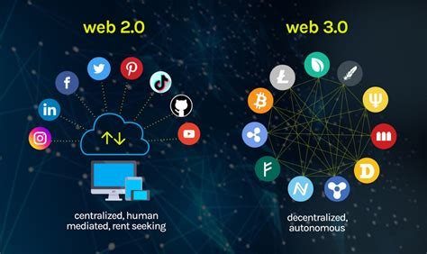

Web 3.0
Web3 has become a catch-all term for the vision of a new, better internet. At its core, Web3 uses blockchains, cryptocurrencies, and NFTs to give power back to the users in the form of ownership. A 2020 post on Twitter(opens in a new tab) said it best: Web1 was read-only, Web2 is read-write, Web3 will be read-write-own.
Core ideas of Web3 Although it's challenging to provide a rigid definition of what Web3 is, a few core principles guide its creation.
- Web3 is decentralized: instead of large swathes of the internet controlled and owned by centralized entities, ownership gets distributed amongst its builders and users.
- Web3 is permissionless: everyone has equal access to participate in Web3, and no one gets excluded.
- Web3 has native payments: it uses cryptocurrency for spending and sending money online instead of relying on the outdated infrastructure of banks and payment processors.
- Web3 is trustless: it operates using incentives and economic mechanisms instead of relying on trusted third-parties.
More Information About Web 3.0